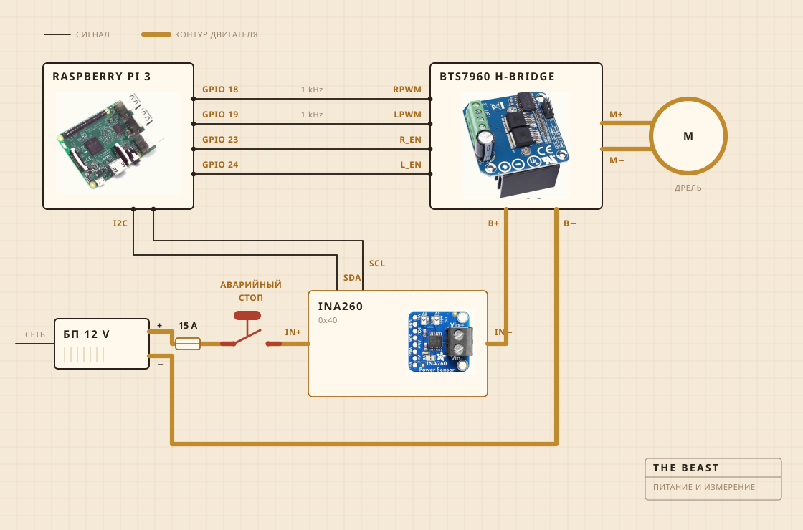

01
Из чего она собрана
Крутит аккумуляторная дрель. Она сидит в зажиме, прикрученном к разделочной доске, и именно доска держит всё выстроенным над кастрюлей. Головка мутовки это твёрдое дерево на стальном валу, собранное на винтах, а не на клею, и именно поэтому я сделал её, а не купил.
Электроника живёт в прозрачном пластиковом контейнере, в основном чтобы я видел, не загорелось ли что-нибудь. Записью занимается Raspberry Pi. Большая жёлтая кнопка разрывает питание мотора, и ничто в софте не может её переспорить.

- МоторАккумуляторная дрель в зажиме, обороты сильно ниже полных
- МутовкаТвёрдое дерево и нержавейка, сделана, а не куплена
- НагревПлитка, которую регулятор мощности включает и выключает
- КаркасРазделочная доска и пластиковый контейнер
- ПитаниеИмпульсный блок 12 V, из розетки
- МозгRaspberry Pi, пишет в CSV
- ЧувствоТок и напряжение при сбивании, датчик в кастрюле при вытапливании
- СтопОдна большая кнопка, жёстко в проводах
02
Как она собрана по схеме
Четыре сигнальных провода и один толстый контур. Pi считает, насколько сильно и в какую сторону, ток на самом деле толкает H-мост, и эти двое никогда не встречаются. Через то, чего касается Pi, не идёт больше нескольких миллиампер.
Кнопка это та часть, на которую стоит посмотреть. Она вообще не подключена к Pi. Она стоит в контуре мотора и разрывает его, так что никакой сбой в софте не отговорит её остановиться. Что Pi может, так это заметить. Если он просит тридцать процентов, а датчик возвращает меньше двухсот миллиампер, он делает вывод, что контур разомкнут, и перестаёт просить.
Датчик стоит в том же контуре, но его логическая часть питается от Pi, и поэтому он отвечает даже тогда, когда питание снято. В этом весь фокус проверки кнопки.

03
Где она стоит
Над раковиной. Кастрюля идёт в чашу, сверху ложится плоская крышка с прорезанным отверстием под вал, и всё, что сбегает, попадает туда, где это не важно.
Это та часть, которую никто не кладёт в рендер. Половина работы, когда собираешь что-то на кухне, уходит на решение о том, куда разрешено деваться беспорядку.

04
За чем она следит
Пока идёт сбивание, за током и напряжением на линии мотора, примерно раз в секунду, и прямо в файл. Пока идёт вытапливание, вместо этого за датчиком в кастрюле, а регулятор то включает плитку, то выключает, чтобы держать число.
Ни микрофона, ни камеры, и это следующее, что я хочу исправить. Ставка до сих пор была в том, что если одной нагрузки хватает, чтобы найти перелом, остальное может подождать.

05
Что она решает
Две вещи. Поднялась ли нагрузка и упала ли потом достаточно, чтобы объявить перелом, и должна ли плитка быть включена или выключена, чтобы стоять на 250 F.
Она не знает, что такое йогурт. Она не знает, что такое масло. Она знает, что число какое-то время росло, а потом ушло вниз, и что эта форма означает, что работа закончена.

Йогурт, мутовка, перелом и час наблюдения за цветом.